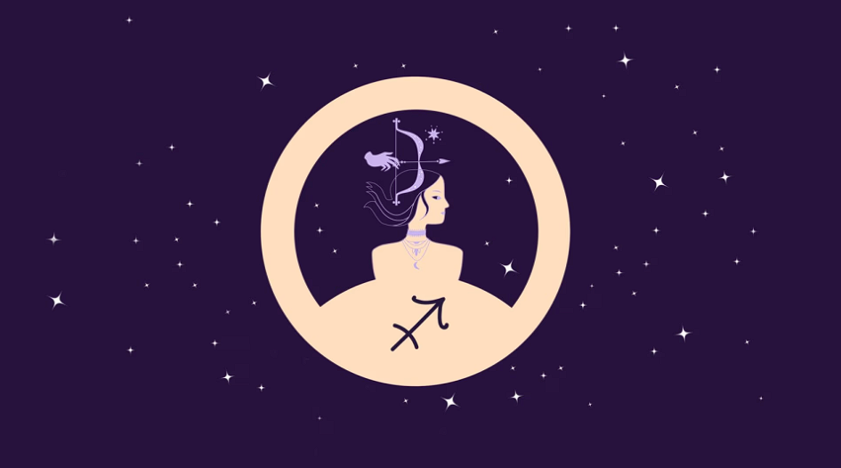

10.1.2026
Puhu haaveistasi ja huolistasi, jousimies. Me Naisten päivän horoskooppi kertoo, mitä tähdet lupaavat tälle päivälle kullekin horoskooppimerkille.
Kuva: Shutterstock
Ellen KamppiEteesi tulee jokin hieno tilaisuus tai onnenkantamoinen, johon kannattaa tarttua empimättä. Kuuntele intuitiotasi. Se kertoo, mikä on sinulle hyväksi.
Sinulla on uskallusta ja mielikuvitusta, joiden turvin käyt innosta puhkuen eteesi tulevien haasteiden kimppuun. Käytät vahvuuksiasi monipuolisesti.
Intohimo on päivän sana ja johtotähtesi kaikessa, mitä teet ja ajattelet niin ihmissuhteissasi, töissäsi kuin harrastuksissakin. Tunteet hallitsevat.
Kotiin tai perheeseen liittyvät asiat voivat vaatia tavallista enemmän huomiotasi. Älä epäröi ottaa mahdollisia ongelmia käsittelyyn. Olet siinä hyvä.
Saatat kokea elämäsi hieman kaoottiseksi tai vaikeaksi pysyä alati muuttuvien tilanteiden tasalla. Ota etäisyyttä ja keskity yhteen asiaan kerrallaan.
Jos ilmaiset toiveesi epäselvästi vihjaillen, on tuloskin sattuman kauppaa. Ole täsmällinen viestinnässäsi, niin mahdollisuus saada haluamasi paranee.
Tähtitaivas hellii sinua tavallista paremman onnen lisäksi jollain aivan erityisen hienolla yllätyksellä. Romantiikka ja ystävyys ovat voimanlähteesi.
Luota vaistoosi etenkin uusien tuttavuuksien kohdalla. Ei ole syytä leikkiä vaikeasti tavoiteltavaa, jos eteesi tulee joku, jonka kanssa synkkaa heti.
Rehellisyys ja aitous korostuvat ihmissuhteissasi, ja se pätee myös suhteessa itseesi. Oletko ehkä yrittänyt tukahduttaa jonkin tarpeesi tai toiveesi?
Rohkeutta ja jämäkkyyttä tarvitaan. Joku voi nyt koettaa horjuttaa uskoasi johonkin tärkeänä pitämääsi asiaan tai kyseenalaistaa pyrkimyksiäsi.
Pinnan alla kyteneet jännitteet voivat purkautua yllättävässä tilanteessa. Kuohahdus menee kuitenkin nopeasti ohi. Se puhdistaa ilmaa ja avaa solmut.
Älä arkaile ilmaista mahdollisia huoliasi ja haaveitasi ääneen. Voit saada tukea ja hyödyllisiä neuvoja tai yhteistyökumppanin yllättävältä taholta.